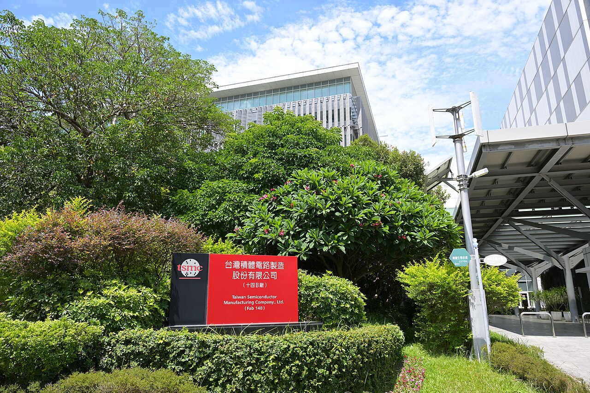

Pendapatan OpenAI kuartal III tembus US$10 miliar, TSMC siapkan hingga US$500 juta untuk Anthropic dan OpenAI, Alibaba lanjutkan IPO unit chipOpenAI Q3 revenue tops US$10 billion, TSMC sets aside up to US$500 million each for Anthropic and OpenAI, Alibaba moves ahead with chip unit IPO
Pendapatan OpenAI naik hampir 50% dari kuartal sebelumnya menjadi sekitar US$10 miliar, tetapi perusahaan masih rugi besar. Dewan TSMC menyetujui investasi maksimal US$500 juta di saham Anthropic dan maksimal US$500 juta di saham preferen OpenAI. Alibaba mendapat persetujuan HKEX untuk melanjutkan rencana spin-off unit chip T-Head.OpenAI's revenue rose nearly 50% from the previous quarter to about US$10 billion, but the company is still losing heavily. TSMC's board approved investments of up to US$500 million in Anthropic shares and up to US$500 million in OpenAI preferred stock. Alibaba received HKEX approval to proceed with its planned spin-off of chip unit T-Head.

Poin utamaKey points
- CFO OpenAI Sarah Friar kepada Yahoo Finance: pendapatan kuartal III naik hampir 50% secara kuartalan menjadi US$10 miliar, dengan run rate tahunan sekitar US$50 miliar. Bisnis enterprise naik dua kali lipat, dan pendapatan kini terbagi 50/50 antara enterprise dan konsumen.
- Menurut Wall Street Journal (via Reuters), margin operasi yang disesuaikan membaik ke -109% dari -150%, tetapi rugi operasi melebar ke US$10,9 miliar dari US$10,1 miliar.
- Dewan TSMC (10/11) menyetujui anggaran modal sekitar US$40,93 miliar, dividen kuartal III NT$9 per saham, serta investasi maksimal US$500 juta di saham Anthropic (di harga IPO) dan maksimal US$500 juta di saham preferen OpenAI.
- Alibaba mendapat persetujuan Bursa Hong Kong (HKEX) untuk melanjutkan rencana spin-off dan pencatatan terpisah unit chip T-Head. Ukuran IPO dan valuasi belum diungkap.
- Angka TSMC adalah batas persetujuan dewan, bukan pembelian yang sudah terjadi. Listing T-Head masih butuh persetujuan Listing Committee HKEX dan pendaftaran ke regulator China (CSRC).
- OpenAI CFO Sarah Friar to Yahoo Finance: Q3 revenue rose nearly 50% quarter on quarter to US$10 billion, with an annual run rate of about US$50 billion. The enterprise business doubled, and revenue is now split 50/50 between enterprise and consumer.
- According to the Wall Street Journal (via Reuters), the adjusted operating margin improved to -109% from -150%, but the operating loss widened to US$10.9 billion from US$10.1 billion.
- TSMC's board (10/11) approved capital appropriations of about US$40.93 billion, a Q3 dividend of NT$9 per share, and investments of up to US$500 million in Anthropic shares (at the IPO price) and up to US$500 million in OpenAI preferred stock.
- Alibaba received approval from the Hong Kong Stock Exchange (HKEX) to proceed with the proposed spin-off and separate listing of chip unit T-Head. The IPO size and valuation have not been disclosed.
- The TSMC figures are board-approved limits, not purchases that have already happened. The T-Head listing still needs approval from the HKEX Listing Committee and a filing with China's securities regulator (CSRC).
OpenAI, pembuat ChatGPT, membagikan angka keuangan kuartal III 2026 kepada investor pada Selasa (10/11/2026). Menurut Bloomberg, pendapatan kuartalan perusahaan menembus US$10 miliar untuk pertama kalinya, naik hampir 50% dari kuartal sebelumnya dan hampir tiga kali lipat dibanding periode yang sama tahun lalu.
CFO OpenAI Sarah Friar mengonfirmasi angka itu kepada Yahoo Finance dan menyebut run rate tahunan sekitar US$50 miliar. "Our enterprise business doubled quarter over quarter," katanya (Bisnis enterprise kami naik dua kali lipat dibanding kuartal sebelumnya), seraya menambahkan bahwa pendapatan OpenAI kini terbagi 50/50 antara bisnis enterprise dan konsumen. Menurut Friar, penjualan bisnis konsumen naik 20% secara kuartalan, pelanggan berbayar melampaui 100 juta, dan pengguna aktif mingguan mencapai 1,2 miliar.
Meski begitu, OpenAI masih merugi besar. Wall Street Journal, seperti dikutip Reuters, melaporkan margin operasi yang disesuaikan membaik ke -109% dari -150% pada kuartal sebelumnya, tetapi rugi operasi melebar menjadi US$10,9 miliar dari US$10,1 miliar. OpenAI tidak langsung menanggapi permintaan komentar Reuters.
Di hari yang sama, dewan direksi TSMC (TWSE: 2330, NYSE: TSM) menyetujui anggaran modal sekitar US$40,93 miliar untuk kapasitas teknologi canggih, advanced packaging, pembangunan pabrik, dan investasi R&D 2027. Dewan juga menyetujui investasi di Anthropic dengan nilai tidak lebih dari US$500 juta untuk membeli saham biasa di harga IPO, serta investasi di OpenAI dengan nilai tidak lebih dari US$500 juta untuk membeli saham preferen. TSMC melaporkan pendapatan kuartal III NT$1.494,24 miliar dan laba bersih NT$763,06 miliar, serta menetapkan dividen tunai NT$9 per saham.
Sementara itu, Alibaba Group mengumumkan pada 10 November bahwa Bursa Hong Kong (HKEX) mengizinkan perusahaan melanjutkan rencana spin-off dan pencatatan terpisah unit chip T-Head, menurut Investing.com. T-Head telah mengajukan permohonan listing secara rahasia pada 11 September untuk mencatatkan saham H di papan utama HKEX. Penawaran akan terdiri dari penawaran umum di Hong Kong dan penempatan ke investor institusi. T-Head akan tetap menjadi anak usaha Alibaba. Alibaba belum mengungkap ukuran penawaran maupun valuasi, dan menyatakan tidak ada jaminan spin-off akan terlaksana.
OpenAI, the maker of ChatGPT, shared its Q3 2026 financial figures with investors on Tuesday (10/11/2026). According to Bloomberg, the company's quarterly revenue topped US$10 billion for the first time, up nearly 50% from the previous quarter and almost threefold from the same period a year earlier.
OpenAI CFO Sarah Friar confirmed the figure to Yahoo Finance and put the annual run rate at about US$50 billion. "Our enterprise business doubled quarter over quarter," she said, adding that OpenAI's revenue is now split 50/50 between its enterprise and consumer businesses. According to Friar, consumer sales rose 20% quarter on quarter, paid subscriptions topped 100 million and weekly active users reached 1.2 billion.
Even so, OpenAI is still losing heavily. The Wall Street Journal, as cited by Reuters, reported that the adjusted operating margin improved to -109% from -150% in the previous quarter, but the operating loss widened to US$10.9 billion from US$10.1 billion. OpenAI did not immediately respond to Reuters' request for comment.
On the same day, the board of TSMC (TWSE: 2330, NYSE: TSM) approved capital appropriations of about US$40.93 billion for advanced technology capacity, advanced packaging, fab construction and 2027 R&D investment. The board also approved an investment in Anthropic of no more than US$500 million to acquire common shares at the IPO price, and an investment in OpenAI of no more than US$500 million to acquire preferred stock. TSMC reported Q3 revenue of NT$1,494.24 billion and net income of NT$763.06 billion, and set a cash dividend of NT$9 per share.
Meanwhile, Alibaba Group announced on 10 November that the Hong Kong Stock Exchange (HKEX) had allowed it to proceed with the proposed spin-off and separate listing of chip unit T-Head, according to Investing.com. T-Head confidentially filed a listing application on 11 September to list H shares on the HKEX main board. The offering would consist of a Hong Kong public offering and a placement with institutional investors. T-Head will remain an Alibaba subsidiary. Alibaba has not disclosed the size of the offering or its valuation, and said there is no assurance the spin-off will take place.
Kenapa pentingWhy it matters
Angka-angka ini menunjukkan uang besar masih mengalir ke AI: pendapatan pengembang model naik cepat, dan pembuat chip terbesar dunia ikut menanam modal di dua pengembang AI terbesar. Sentimen sektor AI sering ikut memengaruhi saham teknologi dan token crypto bertema AI.These figures show big money is still flowing into AI: model developers' revenue is rising fast, and the world's largest chipmaker is investing in the two biggest AI developers. AI sector sentiment often affects tech stocks and AI-themed crypto tokens.
Pertumbuhan pendapatan OpenAI kuat, tetapi rugi yang masih melebar menunjukkan bisnis AI frontier masih sangat mahal. Langkah TSMC ke Anthropic dan OpenAI juga datang menjelang IPO Anthropic yang dijadwalkan 19 November. Ini interpretasi, bukan rekomendasi saham atau token.OpenAI's revenue growth is strong, but the still-widening loss shows frontier AI remains very expensive. TSMC's move into Anthropic and OpenAI also comes ahead of Anthropic's IPO, scheduled for 19 November. This is interpretation, not a stock or token recommendation.
Foto: TSMC Fab 14B, Mei 2025 (4300streetcar, CC BY 4.0, Wikimedia Commons). Foto ilustrasi.Photo: TSMC Fab 14B, May 2025 (4300streetcar, CC BY 4.0, Wikimedia Commons). Illustrative photo.
SumberSources
- Yahoo Finance: OpenAI CFO: Q3 was a 'blockbuster quarter,' revenue jumped 50%
- Bloomberg Law: OpenAI Third-Quarter Revenue Soars Nearly 50% to $10 Billion
- Reuters via CNA: OpenAI posts steep losses even as quarterly revenue rises to $10 billion, WSJ reports
- TSMC: Board of Directors Meeting Resolutions (10 Nov 2026)
- Investing.com: Alibaba advances Hong Kong IPO plans for chip subsidiary T-Head
Ikuti COIN BRO diFollow COIN BRO on Telegram
Dapatkan berita seperti ini lebih cepat di channel kami. Gratis.Get news like this faster on our channel. Free.
Bukan saran finansial. Artikel ini adalah informasi dan edukasi, bukan ajakan membeli atau menjual aset apa pun. Aset kripto berisiko tinggi. Fakta mengikuti sumber yang tercantum; bagian berlabel interpretasi adalah pendapat, bukan fakta. Menemukan kesalahan? Lihat kebijakan koreksi.Not financial advice. This article is information and education, not a solicitation to buy or sell any asset. Crypto assets are high risk. Facts follow the listed sources; sections labeled interpretation are opinion, not fact. Found an error? See our corrections policy.